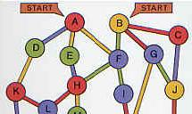
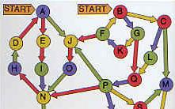

Robert Abbott's Mad Space Mazes ☕
Meteor Storm and Shipwreck are two of the many multi-state mazes by Robert Abbott from his book Mad Mazes published in 1990. Two space men are stuck in a damaged space ship. They have to crawl through corridors and open doors for each other to get to the engine room. Can you help them work together and reach the engine room?
Both these applets will offer a 'trainer' puzzle first. Use the select maze drop list to select the the real challenge. These puzzles look and feel somewhat different to Robert Abbott's originals but the two versions are equivalent. To decide for yourselves you will have to buy the book! I highly recommend it.
Meteor Storm
by Robert Abbott

Aim
Route the two red dots onto their blue targets. There are coloured
markers on the floors of most rooms. If you position a red dot on a
coloured marker, then doors of matching colour will open.
In Meteor Storm, doors can be passed in both direction.
Controls
Use Select maze drop-list to select a puzzle
Use Reset to restart the current challenge
Movement
Move a red dot by dragging it with the mouse or by using the tab and cursor keys.
Spacewreck
by Robert Abbott

Aim
Route the two red dots onto their blue targets. There are coloured
markers on the floors of most rooms. If you position a red dot on a
coloured marker, then doors of matching colour will open.
In Spacewreck, doors can only be passed in one direction.
Controls
Use Select maze drop-list to select a puzzle
Use Reset to restart the current challenge
Movement
Move a red dot by dragging it with the mouse or by using the tab and cursor keys.
puzzle designs - © Robert Abbott - 1990
original java applet - © Oskar van Deventer - 2003
hosted with permission from Robert Abbott and Oskar van Deventer